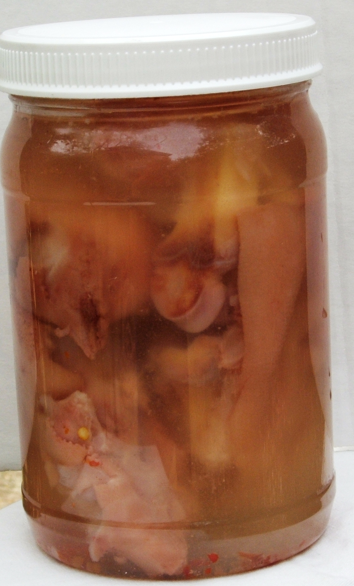

Pickled Pig's Feet

A vintage recipe for a traditional American
treat. Pig's feet can be specially ordered from
most butcher shops. Don't knock it till you try it!
From justapinch.com
Ingredients:
- 4 good-sized boiled pigs feet with uppers
- 1 quart vinegar
- 4 bay leaves
- 1 tablespoons whole cloves
- 1 tablespoons broken cinnamon sticks
- 1/4 cup salt
- 2 teaspoons pepper
- 1/2 large onion, cut into eights
- 1 blade of mace
Home page